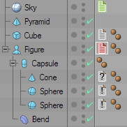
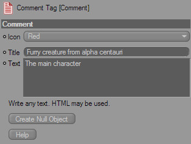

The Comment Tag

The Comment Tag is the way to place text information in your scene. Use it to write your own remarks for certain objects.
The information from the tags is used in other processes, such as generating an HTML exposé. Also, you can easily convert a Comment Tag to a Null Object, to make your scene comments available to people who don't have the SceneDocumentor plugin installed.
Attach the Comment Tag to any object by selecting it from the Tags menu in the Object Manager, or from the Object Manager's context menu.
Icon

Here you can change the look of the Comment Tag's icon. This helps you memorizing things (e.g. priorities, open questions) by just looking at the tag.
Title
Input any title for your comment here. By default it's just "Comment".
Text
Input any text here. If you want, you can also use HTML code, which will work in the exposé.
Create Null Object
If you want to get rid of the Comment Tag, but keep it's text information, click this button. It will create a Null Object above the current object, and name it according to the Tag's contents.